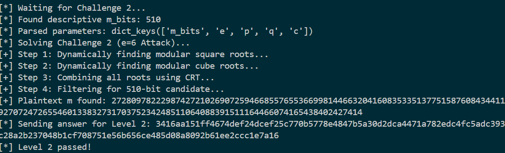
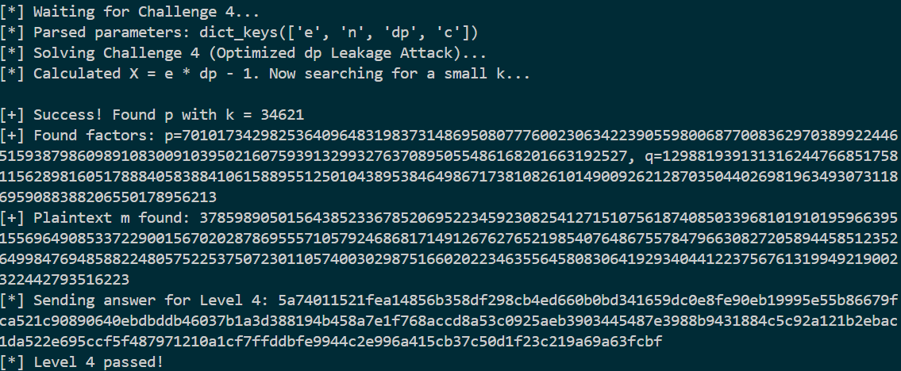
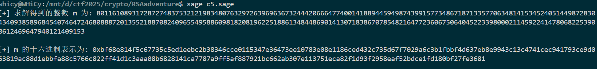
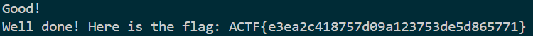
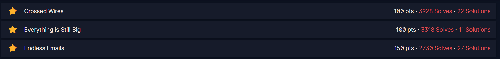
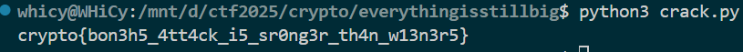

Crypto Lab2：公钥密码学¶
1 RSA部分¶
1.1 RSAadventure¶
选择RSAadventure，一共是5个challenge（工作量证明不做赘述）。其中1-4由脚本自动攻击实现，5查询后进行了本地求解提交得到flag。把每个challenge的攻击思路阐述一下，要求不能用factordb.com已经避免了
Challenge 1¶
标准的Håstad's Broadcast Attack，使用CRT计算得到\(m^3 \equiv C \bmod N\)，其中\(N=\prod_{i=1}^3 n_i\)，开立方根即得\(m\)
def solve_challenge_1(params):
print("[*] Solving Challenge 1 (Håstad's Broadcast Attack)...")
e, ns, cs = params['e'], [params['n1'], params['n2'], params['n3']], [params['c1'], params['c2'], params['c3']]
m_cubed = solve_crt(cs, ns)
m, is_perfect_cube = gmpy2.iroot(m_cubed, e)
if is_perfect_cube:
print(f"[+] Plaintext m found: {m}")
return m
else:
raise ValueError("Challenge 1 failed: CRT result is not a perfect cube.")

Challenge 2¶
公钥指数 e 是一个很小且为合数的6，由于知道了 n 的质因数 p 和 q，我们可以将这个问题分解。根据中国剩余定理，求解 m6≡c(modn) 等价于求解以下方程组：\(m^6≡c \mod p\)，\(m^6≡c\mod q\)
令 \(s\)\(=\)\(m^3\)，那么原方程就变成了 \(s^2≡c\mod p\)。 整个破解流程就变为求解 \(s^2≡c\mod p\) 和\(s2≡c\mod q\)，得到 s 的所有可能解。
对于每一个 s 的解，再求解 \(m^3≡s\mod p\) 和 \(m^3≡s\mod q\)，得到 m 的所有可能解，最后，将模 p 和模 q 下 m 的解通过中国剩余定理组合，得到模 n 下的最终候选解，再通过 m_bits 筛选出正确答案。
def solve_challenge_2(params):
print("[*] Solving Challenge 2 (e=6 Attack)...")
p, q, e, c, m_bits = params['p'], params['q'], params['e'], params['c'], params['m_bits']
print("[+] Step 1: Dynamically finding modular square roots...")
s_p_roots = set()
if p % 4 == 3: s_p = pow(c, (p + 1) // 4, p); s_p_roots = {s_p, p - s_p}
else: s_p_roots = set(nthroot_mod(c, 2, p, all_roots=True))
s_q_roots = set()
if q % 4 == 3: s_q = pow(c, (q + 1) // 4, q); s_q_roots = {s_q, q - s_q}
else: s_q_roots = set(nthroot_mod(c, 2, q, all_roots=True))
print("[+] Step 2: Dynamically finding modular cube roots...")
m_p_roots, m_q_roots = set(), set()
for s_p in s_p_roots:
if (p - 1) % 3 == 0: m_p_roots.update(nthroot_mod(s_p, 3, p, all_roots=True))
else: d3_p = inverse(3, p - 1); m_p_roots.add(pow(s_p, d3_p, p))
for s_q in s_q_roots:
if (q - 1) % 3 == 0: m_q_roots.update(nthroot_mod(s_q, 3, q, all_roots=True))
else: d3_q = inverse(3, q - 1); m_q_roots.add(pow(s_q, d3_q, q))
print("[+] Step 3: Combining all roots using CRT...")
candidates = [solve_crt([r_p, r_q], [p, q]) for r_p in m_p_roots for r_q in m_q_roots]
print(f"[+] Step 4: Filtering for {m_bits}-bit candidate...")
for m_candidate in candidates:
if m_candidate.bit_length() == m_bits:
print(f"[+] Plaintext m found: {m_candidate}")
return m_candidate
raise ValueError(f"Challenge 2 failed: No candidate with {m_bits} bits was found.")

Challenge 3¶
考点相对来说平常，对于n不能分解为两个质因数的情况，欧拉函数的构造变为ϕ(n)=p(p−1)(q−1)，同时在进行正常分解后得到p，q相对接近，考虑使用n的立方根进行搜索加快攻击效率
def factor_p_squared_q(n, search_limit=100000):
a = gmpy2.iroot(n, 3)[0]
print(f"[*] Cube root of n is approximately: {a}")
print(f"[*] Searching for factors around this value...")
for i in range(1, search_limit):
for sign in [-1, 1]:
candidate = a + (i * sign)
if n % candidate == 0:
p_found = candidate
n_rem = n // p_found
if n_rem % p_found == 0:
q_found = n_rem // p_found
return p_found, q_found
raise ValueError(f"Failed to find factors within search limit.")
def solve_challenge_3(params):
print("[*] Solving Challenge 3 (Repeated Factor Attack)...")
n, e, c = params['n'], params['e'], params['c']
p, q = factor_p_squared_q(n)
print(f"[+] Found factors: p={p} (repeated), q={q}")
phi = p * (p - 1) * (q - 1)
d = inverse(e, phi)
m = pow(c, d, n)
print(f"[+] Plaintext m found: {m}")
return m

Challenge 4¶
标准的dp泄露攻击，核心式子是\(e⋅dp−1=k(p−1)\)，由于k是通常是一个相当小的值，直接进行小范围暴力搜索，从而快速找到p进行后续求解
def solve_challenge_4(params):
print("[*] Solving Challenge 4 (Optimized dp Leakage Attack)...")
n, e, c, dp = params['n'], params['e'], params['c'], params['dp']
X = e * dp - 1
print(f"[*] Calculated X = e * dp - 1. Now searching for a small k...")
k_limit = e + 100000
p_found = None
found_k = -1
for k in range(1, k_limit):
if X % k == 0:
p_minus_1_candidate = X // k
p_candidate = p_minus_1_candidate + 1
if isprime(p_candidate) and n % p_candidate == 0:
p_found = p_candidate
found_k = k
break
if p_found is None:
raise ValueError(f"Challenge 4 failed: Could not find prime factor p within k_limit={k_limit}.")
print(f"\n[+] Success! Found p with k = {found_k}")
p = p_found
q = n // p
if not isprime(q):
raise ValueError("Challenge 4 failed: n/p is not prime.")
print(f"[+] Found factors: p={p}, q={q}")
phi = (p - 1) * (q - 1)
d = inverse(e, phi)
m = pow(c, d, n)
print(f"[+] Plaintext m found: {m}")
return m

Chllenge 5¶
两次分别发送k=1和k=2得到两个方程
\(C_1=m^2+m\mod n\)，\(C_2=(m^2+2m)^2\mod n\)，整理得到
\(C_2\equiv (C_1^2+C_1)+2(C_1-1)m\mod n\)
最终求解m的公式为
本地构造了脚本进行求解

n = 0xb3eaacc65bf88213e2a641130ae0c382fb2682794e62385f9944f9ff7356bbe2b057226747f38e177cb758888297c7f843f95dda1f5831d2e8ce48256604d11b45fc9010cbd183ee646bf6c687792284bbf029b7abc9e53b87d66a9ef15dd982ac7fa73d99fdd6baaf512bd735b64e2fb2ca29d2bc2e250ae2f9322ece30424b
C1 = 0x56379b3fcd3d6d2e2d7e3f31c6887d5469d1295c4d16d2dfd9124011081e3219d690c562d8e91aa23385020ecf8902c5e6f6acfc3352955156a17ed8d964422ac828bf9e85c9840ea89efd6f552d6ef882240a22f4621f94b0288c42a85a79be1728f77f8a5a586da8b526d1be07090d2deaf90091798400796d556700a8b719
C2 = 0x92a6cb7736dabd521a3df6e8f06f620a0307329bf2d115a0b66f7bbde127a170b8eb16390c18ce6242af1dedf7290b4cc6fce89c570061309fb5d2977ab0350a8a3032c0b5834301dc11bf626c32eb84cdff94954662b6ff4a6a79c822addac2d26f5f59e14ed24538664f5c3f82f2989d67923cd76e3e8ed41b33d5ff1cd26f
R = IntegerModRing(n)
C1_mod = R(C1)
C2_mod = R(C2)
m_mod = (C2_mod - C1_mod^2 - C1_mod) * (2*C1_mod - 1)^(-1)
m_int = int(m_mod)
print(hex(m_int))
通过5个challenge后，得到完整flagACTF{e3ea2c418757d09a123753de5d865771}

题目通过截图，附件包含RSAadventure.py

1.2 CryptoHack¶
三道题目通过截图

1.2.1 Crossed Wires¶
加密的过程理解为使用一个组合公钥指数\(E_{total}=e_1e_2e_3e_4e_5\)对于明文进行了一次加密，由于已知 e = 0x10001 和泄露的 d，计算 \(e * d - 1\)应该是 \(ϕ(N)\) 的整数倍，那么对于\(E_{total}\)关于它的模求逆元，即可得到总的解密密钥
核心部分脚本如下
E_total=1
for e_friend in friend_keys:
E_total*=e_friend
e= 0x10001
mult_phi=e*d-1
D_total=inverse(E_total, mult_phi)
decrypted_long=pow(cipher, D_total, N)
flag_bytes=long_to_bytes(decrypted_long)
print(flag_bytes.decode('utf-8'))
得到完整flagcrypto{3ncrypt_y0ur_s3cr3t_w1th_y0ur_fr1end5_publ1c_k3y}附件包含CW.py

1.2.2 Everything is Still Big¶
程序的核心漏洞在于私钥 d 的长度只有512位过短，考虑采用维纳攻击计算出私钥 d，攻击策略如下：
- 计算 \(\frac eN\)的连分数展开
- 依次求出其收敛项 \(\frac {k′}{d′}\)
- 将每个分母
d' 尝试解密密文c，如果解密出的明文看起来是有效的 flag 格式，即成功找到了正确的私钥d
核心部分脚本如下
def wiener_attack(e, n):
a0 = e // n
a_i = a0
p_prev, q_prev = 1, 0
p_curr, q_curr = a0, 1
remainder = e % n
while remainder != 0:
yield (p_curr, q_curr)
a_i = n // remainder
n, remainder = remainder, n % remainder
p_next = a_i * p_curr + p_prev
q_next = a_i * q_curr + q_prev
p_prev, q_prev = p_curr, q_curr
p_curr, q_curr = p_next, q_next
得到完整flagcrypto{bon3h5_4tt4ck_i5_sr0ng3r_th4n_w13n3r5}附件包含ESB.py

1.2.3 Endless Emails¶
由于题目给出了七组独立的参数，且使用其对同一条flag进行了重复加密，考虑建立一个关于 \(x\)\(=\)\(m^3\)的线性同余方程组，CRT 告诉我们，只要模数 \(N1,N2,…,Nk\)两两互素，那么上述方程组在模\(N_{product}\)的意义下，有且仅有一个唯一解 \(X=m^3\)
遍历所有从 7 组数据中选取 3 组的组合，对每个组合尝试使用 CRT 求解。一旦找到一个组合，其 CRT 解 X 是一个完美的立方数，那么它的立方根就是我们的目标明文 m
核心部分脚本如下
def solve_crt(remainders, moduli):
N_product = 1
for n in moduli:
N_product *= n
result = 0
for r_i, n_i in zip(remainders, moduli):
N_i = N_product // n_i
inv_N_i = inverse(N_i, n_i)
result += r_i * N_i * inv_N_i
return result % N_product
all_data = load_data_from_file()
E = all_data[0]['e']
for combo in combinations(all_data, E):
moduli = [d['n'] for d in combo]
remainders = [d['c'] for d in combo]
try:
m_cubed = solve_crt(remainders, moduli)
except ValueError:
continue
m_long, is_perfect = gmpy2.iroot(m_cubed, E)
if is_perfect:
recovered_message = long_to_bytes(m_long)
print(recovered_message.decode('utf-8'))
break
得到完整flagcrypto{1f_y0u_d0nt_p4d_y0u_4r3_Vuln3rabl3}附件包含EE.py

2 DLP部分¶
2.1 EZDLP¶
题目的hint给的很清晰了，是一个标准的DLP场景：大素数 p、生成元g、公钥 c以及一段AES加密的密文 ct，并且提到了课上讲过的Pohlig-Hellman算法，该算法的假设群的阶p−1应该是一个光滑数，开始编写的脚本基于这样的假设尝试分解 p−1并依次解决所有子问题，脚本出现了一点意外，把过程调出来之后发现p-1并不光滑
...
[✓] SOLVED: x ≡ ... (mod 8580...)
--- Solving for x mod 1119326809698249181662206673457 (prime q=..., power a=1) ---
脚本在成功解决了所有小因子的子问题后，遇到了一个巨大的素因子 q = 1119326809698249181662206673457，估算一下计算量是不可解的，表明题目并非典型的Pohlig-Hellman问题。查看已经进行的分解，p-1实际上是部分光滑的结构，它由一个非常光滑的部分（\(2^{518}\)）和上述的粗糙素因子组成，于是考虑求解\(xp\mod 2^{518}\)
修改了攻击脚本，使其只执行Pohlig-Hellman算法中针对 \(2^{518}\)的部分，然后直接用得到的结果作为私钥进行解密
from Crypto.Cipher import AES
from hashlib import md5
p = Integer(960494008017250155494739990397196249930200062145145133132556398221074529657304218221253517153928380265486339083177542201148993799925721673833333778621388110957986908045712612233794551809)
g = Integer(3)
c = Integer(505527904713564983625416248872210831215228354175257237841602581321675204643681129570897695080321118656513647239718859773976453054734892142640867733520305568808093022238369199760987416665)
ct = b'qBS\x84\xfc"\xee$\xb2d\xba\xeb\x00\xf7\xf4\xa4\x91\x90<N\x1a\xb0\xa5>\xdc^\xe3I\xc3\xecc\x1e'
R = Integers(p)
q_factor = 2
a_factor = 518
modulus = q_factor**a_factor
order = p - 1
g_q = power_mod(g, order // q_factor, p)
x = 0
c_i = c
for i in range(a_factor):
h = power_mod(c_i, order // (q_factor**(i + 1)), p)
d_i = R(h).log(R(g_q))
x+= d_i * (q_factor**i)
if d_i == 1:
inv_update = power_mod(g, -(q_factor**i), p)
c_i = (c_i * inv_update) % p
key = md5(str(x).encode()).digest()
cipher = AES.new(key, AES.MODE_ECB)
flag_padded = cipher.decrypt(ct)
flag = flag_padded.rstrip(b'\x00')
print(flag)
得到最终完整flag：AAA{W31c0m3_T0_CT4_lo1_c0urs3!}
 题目通过截图，附件包含
题目通过截图，附件包含EZDLP.sage

3 Bonus¶
3.1 故障注入攻击¶
攻击者通过对正在进行密码学计算的设备（如智能卡、HSM）施加物理干扰，诱使其出错，并利用这个错误输出来获取密钥信息。
- 攻击目标: 使用 CRT (中国剩余定理) 进行加速的 RSA 私钥操作。
-
核心原理: 为了加速签名或解密，RSA 实现通常会使用 CRT。私钥持有者不直接计算 m\=cd(modn)，而是分别计算：
-
mp\=cdp(modp) (其中 dp\=d(modp−1))
- mq\=cdq(modq) (其中 dq\=d(modq−1)) 然后通过 CRT 将 mp 和 mq 合并得到最终的
m。
攻击流程如下：
- 攻击者让设备对一个已知的密文
c（或由攻击者选择的c）进行解密。 - 在设备计算 \(m_p\) 和\(m_q\)的过程中，攻击者通过物理手段（如瞬时电压尖峰、激光脉冲、电磁干扰）精确地只干扰其中一个计算，例如，让\(m_q\) 的计算出错，得到一个错误的结果 \(m_q\)\(~\)，而 mp 的计算是正确的。
- 设备继续使用正确的 \(m_p\) 和错误的\(mq\)\(~\) 进行 CRT 合并，最终输出一个错误的明文 \(m\)\(~\)。
-
这个错误的明文 \(m\)\(~\) 具有一个非常特殊的性质：
- \(m\)\(~\)≡mp(modp) （模 p 是正确的）
- \(m\)\(~\)≡mq(modq) （模 q 是错误的）
-
攻击者拥有原始密文
c 和错误的解密结果 \(m\)\(~\)。他可以计算 \(m\)\(~\)^e(modn)，得到一个“错误的密文” \(c\)\(~\)。这个\(c\)\(~\) 也具有特殊性质： -
\(c\)\(~\)≡c(modp)
- \(c\)\(~\)≡c(modq)
- 这意味着 \(c\)\(~\)−c 是
p 的倍数，但不是q 的倍数。 - 因此，攻击者只需计算 gcd(\(c\)\(~\)−c,n)，就能直接得到质因数
p。一旦p 被分解出来，q 也随之可知，整个 RSA 密钥体系被攻破。
3.2 无效曲线攻击¶
针对椭圆曲线密码学 (ECC) 实现的攻击，属于一种“错误输入”攻击，利用了服务器在进行椭圆曲线点乘运算前，未充分验证接收到的点是否在指定的曲线上。
- 攻击目标: 未对输入点进行合法性校验的 ECDH (椭圆曲线密钥交换) 或其他 ECC 协议的实现。
-
核心原理: 在 ECDH 密钥交换中，Alice 和 Bob 共享一个基点
G 和一条公共曲线E。Alice 生成私钥a，计算公钥 A\=aG 并发送给 Bob。Bob 也做类似操作。 攻击者 想要获取 Bob 的私钥b。
攻击流程如下： -
攻击者截获 Alice 发给 Bob 的公钥
A。 - 攻击者不直接转发
A，而是精心构造一个无效的点 P′。这个点 P′ 不在原定的大素数阶的曲线上，而是在另一条阶数很小（例如，阶为h，h 是一个很小的数）的“扭曲”曲线上。 - 攻击者将这个恶意点 P′ 发送给 Bob，伪装成是 Alice 的公钥。
- Bob 的服务器（如果实现有缺陷）不会验证 P′ 是否真的在曲线
E上，而是直接用自己的私钥b 去计算共享密钥：K\=bP′。 - 由于 P′ 所在的曲线阶数为
h，这意味着 hP′\=O (无穷远点，即单位元)。因此，共享密钥K 的取值空间也非常小，只有h 种可能。 - 更重要的是，计算结果 K 泄露了关于 Bob 私钥
b 的信息，具体来说是 bmodh 的值。例如，如果 Bob 返回 K\=(bP′), 攻击者可以尝试所有可能的b mod h 的值（例如从 1 到 h），计算 k′P′ 直到结果等于K，从而得知 b≡k′(modh)。 - 攻击者可以构造多个来自不同小阶数曲线的无效点，重复此过程，每次都能得到一个关于
b 的同余方程。最后，利用中国剩余定理 (CRT)，将这些同余方程组合起来，就可以完全恢复出 Bob 的私钥b。